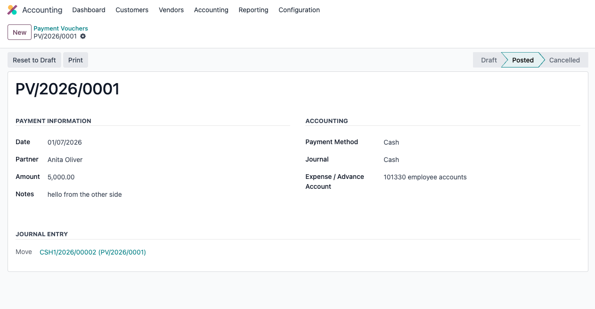
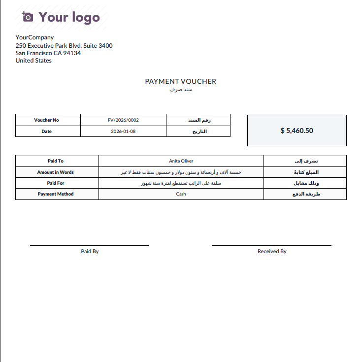
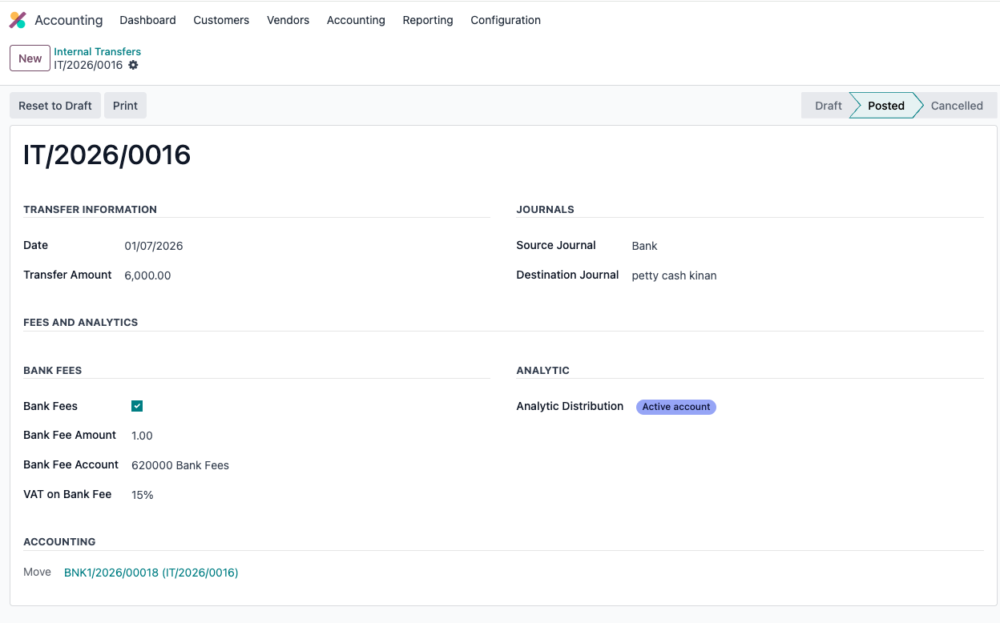

Payment vouchers, receipt vouchers, internal transfers, reconciliation and weekly cash planning in one Odoo 18 accounting workflow.
The module connects operational cash movement with accounting entries, purchase orders, bills/invoices and weekly payment planning.
Record outbound Cash, Cheque or Bank Transfer payments with partner, journal, account, analytic distribution, bank fees and printable voucher output.
Record inbound receipts and connect them to receivables and customer invoices using the same controlled voucher approach.
Find matching vendor bills or customer invoices, reconcile and unreconcile directly from the voucher workflow, including partial-payment scenarios.
Allocate payment amounts across purchase orders, track previously paid and remaining balances, and warn before overpayment.
Move funds between bank/cash journals with accounting entries and optional bank-fee handling.
Create planned payments and receipts, classify by category/project/priority/funding status, add lines into weekly plans and compare forecast to actual.
Approved planned cash movements can be executed into vouchers or transfers and linked back to the originating plan.
Dashboard components for payment vouchers, receipt vouchers and cash-plan lines, plus bilingual printable voucher reports and Arabic amount-in-words support.



When Employee Portal Suite is also installed, the included technical bridge can auto-install and expose authorized treasury approvals and weekly cash-plan functions in the employee portal.